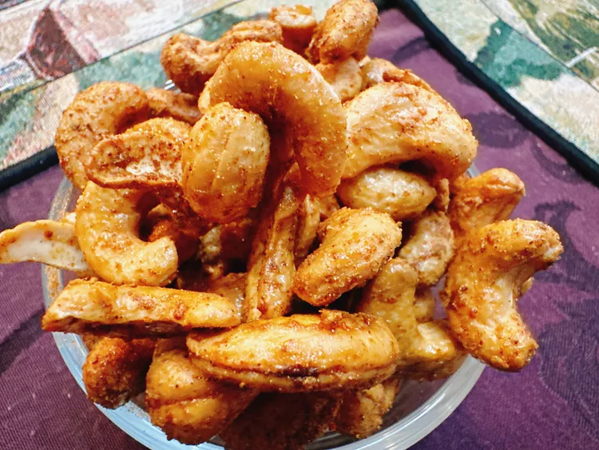

Cashew Recepy

Description
These spicy cashews are not for those with a sensitive palate.
With ghost pepper salt and habanero chili powder, they live up to their name.
You’ve been warned!
Ingredients
- 1 1/2 cups raw cashews
- 2 tablespoons maple syrup
- 2 teaspoons taco seasoning
- 1/4 teaspoon crushed Aleppo peppers
- 1/4 teaspoon ghost pepper salt
- 1/4 teaspoon habanero chili powde
Steps
- Preheat the oven to 350 degrees F (175 degrees C).
Line a baking tray with parchment.
- Add cashews to a resealable plastic bag;
drizzle cashews with maple syrup.
- Stir taco seasoning, Aleppo chili peppers, ghost pepper salt,
and habanero chili powder together in a small bowl.
- Sprinkle seasoning onto cashews, reseal the bag, and shake to
distribute seasoning evenly. Spread cashews in a single layer on the
prepared baking tray.
- Bake in the preheated oven for 15 minutes.
Stir or shake the tray every 5 minutes to toast evenly.
Allow to cool completely, about 15 minutes. Store in an airtight jar.